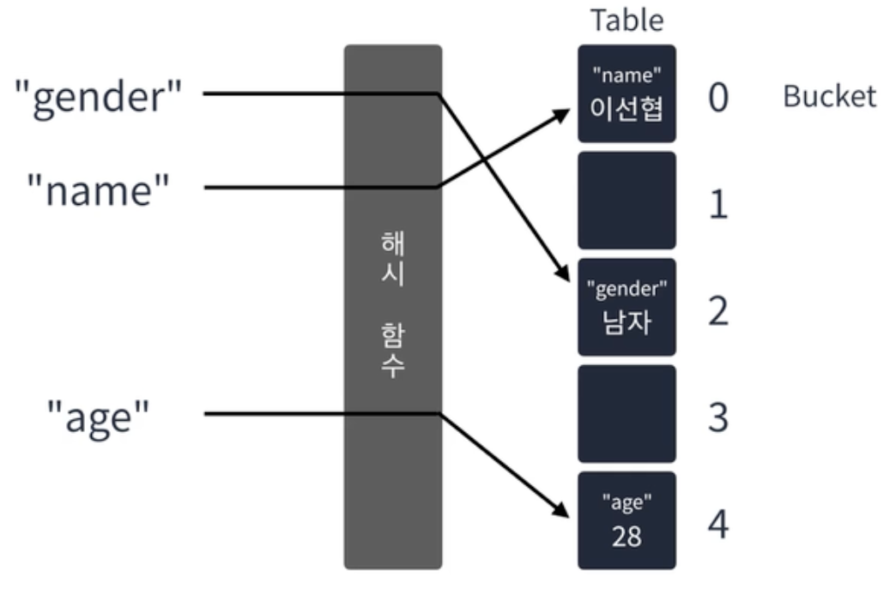

Written by
Jihyun Bang
on
on
[JS] 연결리스트(2) - 해시테이블
해시 테이블
키와 값을 받아 키를 해싱하여 나온 인덱스에 값을 저장하는 선형 자료구조이다. 삽입은 O(1)이며 키를 알고 있다면 삭제, 탐색도 O(1)로 수행한다.

해시함수 : 입력받은 값을 특정 범위 내 숫자로 변경하는 함수
- “Hash Collision” - 해시 충돌
-
해시 함수의 결과가 동일한 값으로 나온 경우
- 선형 탐사법 : 충돌이 발생하면 옆으로 한 칸 이동한다. → 최악의 경우 선형시간 (O(n)) 이 걸릴 수 있음
- 제곱 탐사법 : 충돌이 발생 한 지점에서 충돌이 발생한 횟수의 제곱만큼 옆으로 이동한다. → 데이터가 몰리지 않음
- 이중 해싱 : 충돌이 발생하면 기존 해시함수가 아닌 다른 해시 함수를 이용하여 새로운 인덱스를 만들어낸다.
- 분리 연결법 : 충돌이 발생할 경우 다른 인덱스로 이동하지 않는다. 대신 해시테이블의 요소를 연결리스트 대신 해시테이블의 요소를 연결리스트로 만들어 충돌이 발생한 버킷에 그대로 요소를 추가한다. → 최악의 경우, 하나의 버킷이 무한정 늘어날 수 있다
Javascript 에서 해시테이블 사용하기
- 배열
- 객체
- Map ( set, get )
- Set
해시 테이블_베스트 앨범 실습
문제
스트리밍 사이트에서 장르 별로 가장 많이 재생된 노래를 두 개씩 모아 베스트 앨범을 출시하려 합니다. 노래는 고유 번호로 구분하며, 노래를 수록하는 기준은 다음과 같습니다.
- 속한 노래가 많이 재생된 장르를 먼저 수록합니다.
- 장르 내에서 많이 재생된 노래를 먼저 수록합니다.
-
장르 내에서 재생 횟수가 같은 노래 중에서는 고유 번호가 낮은 노래를 먼저 수록합니다. 노래의 장르를 나타내는 문자열 배열 genres와 노래별 재생 횟수를 나타내는 정수 배열 plays가 주어질 때, 베스트 앨범에 들어갈 노 래의 고유 번호를 순서대로 return 하도록 solution 함수를 완성하세요. 제한사항 • genres[l)는 고유번호가 1인 노래의 장르입니다. • plays[)는 고유번호가 1인 노래가 재생된 횟수입니다. • genres와 plays의 길이는 같으며, 이는 1 이상 10,000 이하입니다. • 장르 종류는 100개 미만입니다. • 장르에 속한 곡이 하나라면, 하나의 곡만 선택합니다. • 모든 장르는 재생된 횟수가 다릅니다.
입출력 예
genres - [‘classic”, “pop”, “classic”, “classic”, “pop’]
plays - [500, 600, 150, 800, 2500]
return - [4, 1, 3, 0]
//1. 같은 장르끼리 묶어야해요.
//2. 묶인 노래들을 재생 순으로 정렬을 해야해요.
//3. 노래를 2개까지 자르는 작업을 해야해요.
//핵심 키워드는 "묶는 것", "정렬"
function solution(genres, plays) {
const genreMap = new Map();
genres
.map((genre, index) => [genre, plays[index]])
.forEach(([genre, play], index) => {
const data = genreMap.get(genre) || { total: 0, songs: [] };
genreMap.set(genre, {
total: data.total + play,
songs: [...data.songs, { play, index }]
.sort((a, b) => b.play - a.play)
.slice(0, 2)
})
})
return [...genreMap.entries()]
.sort((a, b) => b[1].total - a[1].total)
.flatMap(item => item[1].songs)
.map(song => song.index)
}